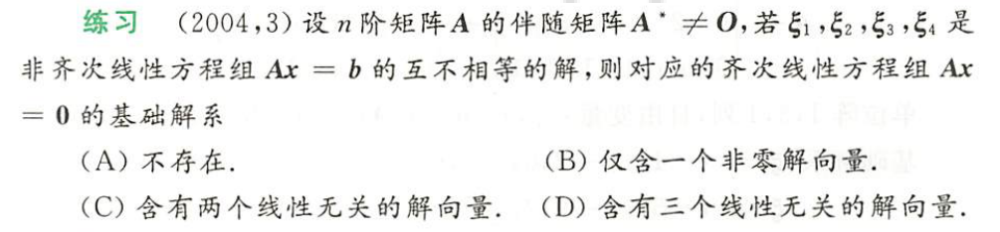
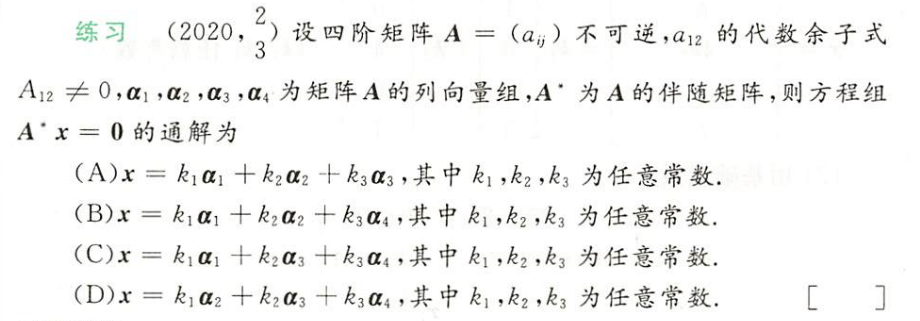
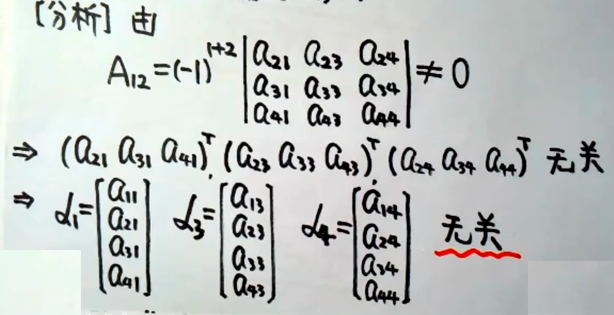
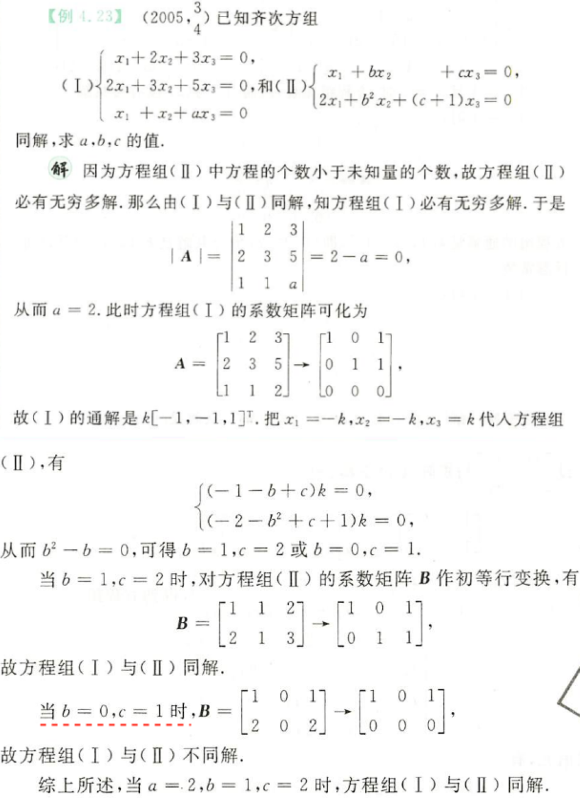
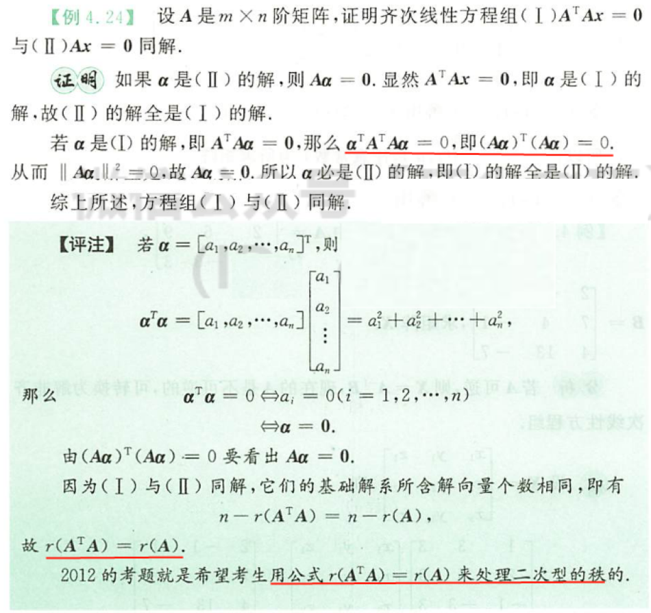
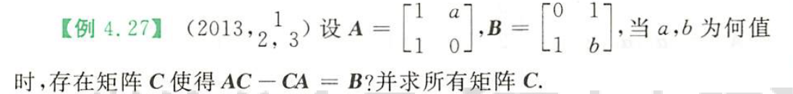
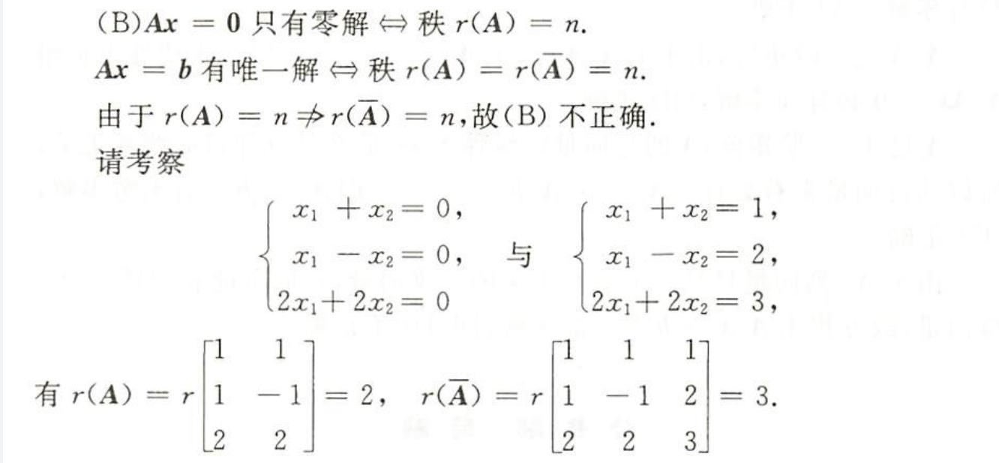

Ax=0
重点： n-r(A)，基础解系
Ax=0有非零解 $\Leftrightarrow $ r(A) < n (未知数个数)$\Leftrightarrow $ A的列向量线性相关
特别地(针对水平型阵和方阵)，※
- A-m×n,m<n, Ax=0 必有非零解
- A-n×n，Ax=0有非零解 $\Leftrightarrow $ |A|=0（克拉默法则）
Ax=0有非零解，则其解线性组合必为Ax=0的解，所以Ax=0若有非零解，则必有无穷多解，在这无穷多解中，线性无关的解向量个数为 $t=n-r(A)$，这就是基础解系，基础解系是Ax=0的解向量中的极大线性无关组。此外，根据定理可知，Ax=0的任一解都可以由基础解系线性表出。
基础解系⭐
- 是解
- 是线性无关组
- 个数t=n-r(A)
真题

【分析】“基础解系不存在”即为Ax=0没有非零解，根据 t=n-r(A) 知，本题等价转化为求解A的秩，求解秩时，找个大，找个小，通过夹逼，确定秩的值。
【解】$A^{*}\neq0$，则$r(A^{ *})\geq 1$，则$r(A)\geq n-1$
Ax=b有解且不唯一，则$r(A) < n$
联立得，r(A)=n-1
故t = n-r(A) = 1
⭐⭐⭐⭐⭐

【分析】根据通解的定义可知，若为通解，解必然线性无关，本题转化为证明 $a_1,a_2,a_3,a_4$哪三个线性无关

这里用到了“低维无关，添加向量后的高维必无关”
此外，如果本题为证明计算题（证明基础解系），即 求$A^{*}x=0$ 的基础解系，则
- 根据$t=n-r(A^{*})$得基础解系解向量个数。
- 求解$r(A^{*})$ (找大找小) ，
- 根据A不可逆得，$|A|=0, r(A)< n=4$
- 由 $A_{12} \neq 0$，则$r(A) \geq n-1=3$
- 则r(A)=3，则$r(A^{*})$ = 1
- t = 4-1=3，即基础解系有三个解向量
- 证明是解
- $A^{*}A=|A| E=0,\text{且}|A|=0$ ，有 $A^{ *} (a_1a_2a_3a_4)=0$，则向量$a_1,a_2,a_3,a_4$ 均为$A^{ *}x=0$ 的解
- 证明线性无关（上面选择题过程）
🤓
Ax=b
重点：有解判定，解的结构
解的性质：
- 非齐的解相减为齐的解
- 齐的解+非齐解为非齐解
解的结构：非齐特解+齐的基础解系=非齐通解
公共解、同解
（一）公共解
- 两个方程解联立得公共解
- 已知一个方程的基础解系，求得另一个方程的基础解系，设$\beta$为公共解，则$\beta$能由两个基础解系分别表出，进而相减得齐次方程组求解。
注意零解一定是公共解。
（二）同解
对Ax=0，Bx=0，若同解，则
n-r(A)=n-r(B)
故必要条件 r(A)-r(B)

秩关系的证明

应用

根据已知，假设出C，解方程组拼出C，考察基本功
命题：若Ax=0只有零解，那么Ax=b有唯一解 ❌
